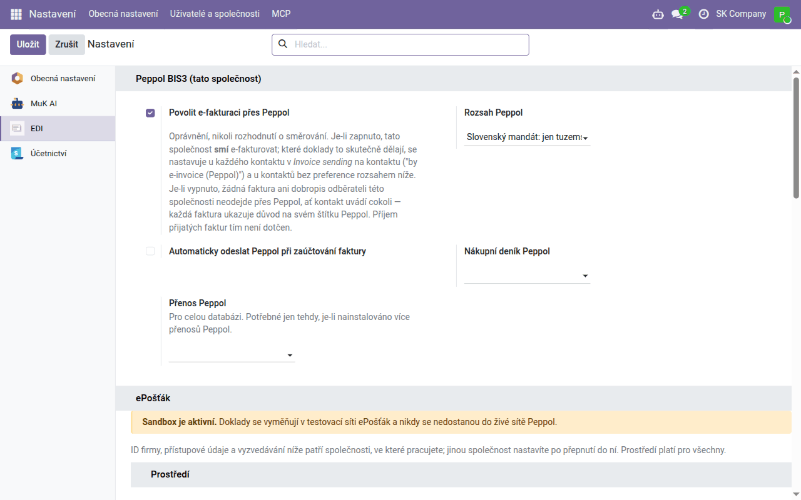
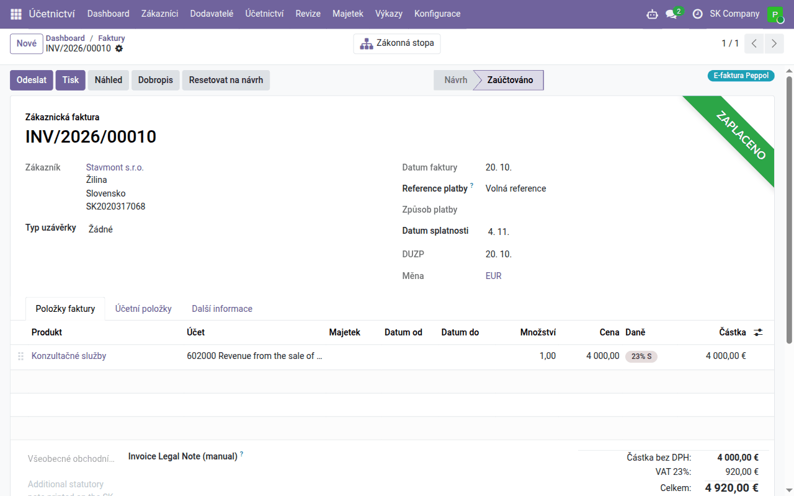
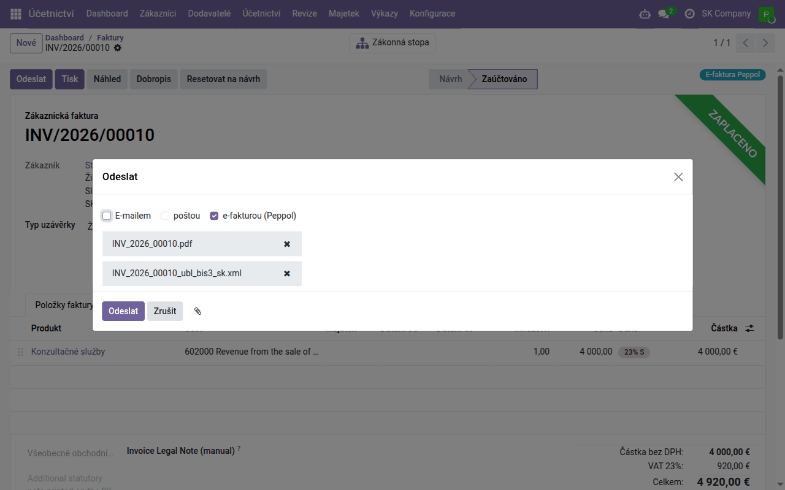

Návod k úloze
Elektronické faktury přes Peppol — předplatitelé Data Dance
Pro předplatitele hostované služby Data Dance — připojení do sítě Peppol zařídíme my, bez vlastní smlouvy a bez klíčů; Peppol adresy, které faktury odejdou elektronicky, stavy doručení a přijaté faktury jako koncepty.
| Země | Česko a Slovensko |
|---|---|
| Edice | Odoo Community |
| Zahrnuje | edi_base, edi_base_peppol, edi_epostak_base, edi_epostak_connector_sapi, edi_epostak_peppol, edi_epostak_broker_client (dodává se samostatně), l10n_sk_ubl_bis3 |
K čemu tento návod slouží
Peppol je evropská síť pro výměnu elektronických faktur. Faktura v ní není PDF, ale soubor XML (Peppol BIS Billing 3.0), který systém odběratele načte bez přepisování. Do sítě se připojuje přes přístupový bod a v síti vás najdou podle Peppol adresy.
Tento návod je pro předplatitele hostované služby Data Dance. Do sítě Peppol vás připojí Data Dance přes přístupový bod ePošťák: nepotřebujete vlastní smlouvu s přístupovým bodem ani žádné klíče. Pokud si Odoo provozujete sami s vlastní smlouvou s ePošťákem, viz návod Elektronické faktury přes Peppol — vlastní smlouva s ePošťákem.
Česko: obecná povinnost neexistuje; elektronický daňový doklad lze vystavit
jen se souhlasem odběratele (§ 26 zákona o DPH).
Slovensko: od 1. ledna 2027 je elektronická faktura povinná při dodání
tuzemské zdanitelné osobě a každý, kdo takové faktury dostává, je musí umět
přijmout (§ 85o slovenského zákona o DPH).
Podrobnosti jsou v modulu edi_base_peppol.
Připojení
Připojení zapne náš tým — požádejte o ně. Nainstalujeme moduly Peppol a ePošťák a v Nastavení → EDI, část ePošťák, vyplníme blok Broker Data Dance. Ve vašem Odoo pak nejsou žádné přihlašovací údaje k ePošťáku; za které společnosti smí vaše databáze posílat faktury, rozhoduje služba Data Dance. Tato pole neměňte — vymazáním URL brokera by se připojení přerušilo.
Vy nastavíte jen to, co následuje: povolení e-fakturace, rozsah a Peppol adresy. Přenos Peppol nechte, jak je — jediným přenosem je ePošťák.
Pro českou společnost se o připojení nejprve poraďte s námi.
Nastavení Elektronická fakturace → Povolit PEPPOL v Nastavení → Účetnictví je jiná cesta do téže sítě: zaregistruje vaši společnost s přístupovým bodem společnosti Odoo S.A. Peppol adresa může být zaregistrována jen u jednoho přístupového bodu; v hostované službě ho zapnout nemůžete a připojení přes Data Dance ho nepotřebuje.
Nastavení
- Povolení. Nastavení → EDI, blok Peppol BIS3 (tato společnost): zaškrtněte Povolit e-fakturaci přes Peppol a zvolte Rozsah Peppol:
- Každý odběratel s Peppol adresou — elektronicky každému, kdo Peppol adresu má. Toto zvolte pro českou společnost;
- Slovenský mandát: jen tuzemské B2B a B2G — platí jen pro slovenskou společnost.
Automaticky odeslat Peppol při zaúčtování faktury odešle fakturu hned po zaúčtování; bez něj ji odešlete tlačítkem Odeslat. Nákupní deník Peppol je deník pro přijaté faktury.

- Peppol adresa vaší společnosti. Na kontaktu společnosti, karta Fakturace: Peppol e-adresa (EAS) a Koncový bod Peppol.
- Česká společnost:
9929a vaše DIČ (napříkladCZ12345678); Odoo ho z DIČ vyplní samo, zkontrolujte ho. - Slovenská společnost:
0245a její DIČ (deset číslic). - Peppol adresy odběratelů na stejném místě jejich kontaktu, podle jejich země stejně. Před první fakturou ověřte, že je odběratel v síti dosažitelný — viz kontrolu Peppol adresy.
- Má-li některý odběratel dostávat faktury jinak, než určuje rozsah, nastavte na jeho kontaktu Odeslání faktury (e-fakturou (Peppol), e-mailem …). Protože v Česku je potřeba souhlas odběratele, je to i místo, kde elektronické zasílání pro jednotlivé odběratele zapnete nebo vypnete.
Které faktury odejdou elektronicky
Každá zaúčtovaná faktura a dobropis odběrateli ukazuje v záhlaví odznak, jak odejde, a na kartě Další informace pole Odesláno jako a Proč:
| Odznak | Význam |
|---|---|
| E-faktura Peppol | odejde přes Peppol |
| odejde obvyklou cestou (e-mail, pošta) | |
| Peppol, ale zablokováno | měla by jít přes Peppol, ale vaše společnost nebo odběratel nemá Peppol adresu — doplňte ji |

Odeslání
S automatickým odesíláním faktura odejde sama při zaúčtování. Jinak klikněte na faktuře na Odeslat: způsob e-fakturou (Peppol) je zaškrtnutý a k faktuře se připojí soubor XML. Chcete-li, pošlete odběrateli i PDF e-mailem.

Před odesláním Odoo soubor zkontroluje podle pravidel EN 16931 a Peppol; faktura s chybou neodejde a chyby se vypíšou. Faktura zůstane zaúčtovaná — opravte údaj a odešlete ji znovu. Doručenou fakturu už znovu neodešlete: opravuje se dobropisem.
Stavy
| Stav Peppol | Význam |
|---|---|
| Připraveno / Ve frontě | čeká na odeslání (fronta se zpracovává každé 2 minuty; při dočasném výpadku se pokus opakuje sám) |
| Odesláno | ePošťák fakturu převzal — to ještě není doručení |
| Hotovo | faktura je doručena do přístupového bodu odběratele |
| Chyba | ePošťák fakturu odmítl nebo ji nemohl doručit; důvod je ve zprávě |
Stav doručení se ověřuje každých 30 minut. Doručení není souhlas odběratele: pokud jeho systém posílá odpovědi, uvidíte na faktuře i Odpověď Peppol na fakturu (například Akceptováno nebo Zamítnuto).
Příjem
Faktury, které vám dodavatelé pošlou na vaši Peppol adresu, Odoo vyzvedne každých 30 minut a z každé vytvoří koncept přijaté faktury v Nákupním deníku Peppol — dodavatele, řádky, daně a částky vyplní ze souboru a soubor XML přiloží. Koncept se nikdy nezaúčtuje sám: zkontrolujte nákladové účty a daně a zaúčtujte ho.
Pokud faktury nepřicházejí, Nastavení → EDI → ePošťák ukazuje Poslední stažení příchozích dokladů; Stáhnout příchozí doklady nyní je vyzvedne hned.
Kdo co smí
Fakturu přes Peppol odešle každý, kdo ji smí upravovat — při zaúčtování i přes Odeslat. Tlačítka Odeslat přes Peppol a Odpověď Peppol… a záložku EDI zprávy Peppol vidí uživatelé se skupinou EDI uživatel. Všechny zprávy jsou i v aplikaci EDI → Zprávy.